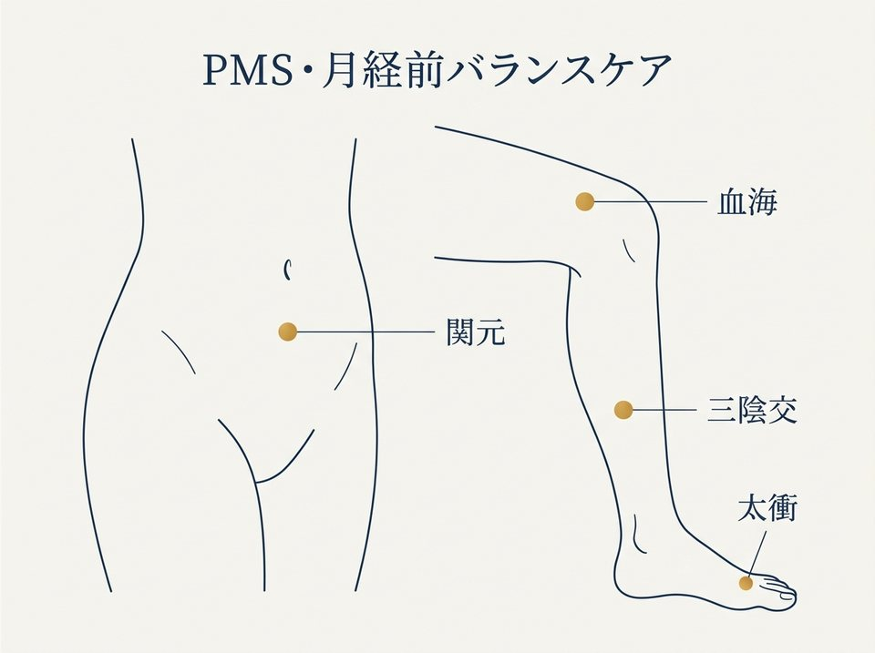

女性の薄毛の鍼灸
加齢・ホルモン変動・免疫低下による女性の薄毛に対し、頭皮への多鍼と全身の体質調整で血流と栄養循環を整える鍼灸ケアです。


院長YouTube解説・関連動画
薄毛を理解するにあたり、次の３点が大切です。
- •薄毛の原因を理解する
- •薄毛のそれぞれの対策方法について理解する
- •薄毛に対する鍼灸の効果を理解する。
40代から50代女性の7割が薄毛に悩んでいるというデータが報告されています。薄毛に悩むのは男性に多いイメージですが、女性も中年期以降、加齢とともに頭皮の栄養吸収率が下がり髪の毛が抜けやすくなります。
“薄毛のせいで見た目が一気に老けて見えて人にあまり会いたくない。自信が持てず外に出たくない。こんな自分を責めてみても髪の毛は抜けるばかり。一体どうすればいいの？”
このような「女性特有の薄毛の悩み」はここで解決できます。
健やかな頭皮環境を取り戻し、あなたの自信を喪失させる薄毛を解決していきましょう。この記事では、女性の薄毛の原因・対策・改善法を３段階に分けて解説します。
薄毛の原因は体質変化
女性の薄毛は3種類の「体質変化」が原因となって起こります。
それぞれ原因によって髪の毛の抜け方も変わるので詳しく見ていきましょう。
薄毛の原因は３つに分けられます。
- •加齢
- •ホルモンバランスの乱れ
- •アレルギー/免疫力の低下
「加齢」による薄毛は最もよく知られている原因です。
毛細血管の働きが加齢とともに衰え、髪の毛に十分な栄養素を届けられなり引き起こされます。
髪の毛は「毛母細胞」という細胞から作られていますが、毛母細胞は頭皮の「毛乳頭」とゆうところから栄養を吸収して育ちます。毛乳頭は毛細血管へとつながります。
必要な栄養素を吸収できない髪の毛は、やがて頭皮から抜け落ちてしまいます。
日常に現れる特徴として、
- •頭皮からまんべんなく髪の毛が抜け落ちて地肌が露わになってきた気がする
- •ヘアセットをしても思うようなボリュームがでない
- •30才過ぎから髪の毛が細くなった気がする
このような症状が目立つ場合は加齢による「びまん性脱毛症」と考えられます。こちらの病気は、中年期の女性によくみられる症状として知られているのです。
２つ目は「ホルモンバランスの乱れ」が原因で起こるケースです。
髪の毛には成長期⇒退行期⇒休止期という3つのサイクルがあります。
ヘアサイクルを正常に保つためには、女性ホルモン・男性ホルモンのバランスを整えておかなければなりません。
ホルモンバランスの乱れで起こる薄毛は、主に出産を機に現れます。
出産で女性の体内ではストレス過多のため、男性ホルモンの方が多く生成され、肝心の女性ホルモンが減少してしまいます。
特徴となる症状は、
- •産後から急に抜け毛が気になるようになった
- •イライラする日が増えて、それに伴い髪の毛のハリやコシがなくなった
- •ストレスを溜め込む習慣になり、頭頂部が薄くなってきた
こうした症状は女性ホルモンの減少・男性ホルモンの急増が原因だと考えていいでしょう。産後の一時的なホルモンバランスの乱れであれば、8ヶ月前後で徐々に回復します。
しかし、ストレスなど心的な要因が災いしている場合は長期で改善が必要になることもあります。
自己免疫の病気やアトピー性皮膚炎も女性の薄毛の原因です。どちらも免疫力が低下し、肌を守る「バリア機能」が壊れることで発症する病気です。
私たちの身体では、細菌・ウイルス感染を体内に入れるのを防ぐため「バリア機能」が働いています。このバリア機能があるからこそ、髪の毛は必要な栄養素を効率よく吸収できます。
しかしながらバリア機能を形成する免疫力が不足すると、頭皮に細菌が付着して炎症を引き起こします。かゆみ・かぶれを生じ、髪の毛が栄養を吸収できず薄毛に発展していきます。
特徴となる症状は、
・髪の毛が抜け落ち、抜けた部分が円形/楕円形になってきた
・アトピーが進行してから髪の毛の生え際が帯状に抜けることが増えた
・すぐに風邪や病気をするようになり髪の毛以外の体毛が薄くなってしまった
このような場合、アレルギー・免疫力の低下が原因となる女性の薄毛症状です。症状の進行具合によっては、回復までに数年を要することもあります。
人気ページ
▼ 詳しく知りたい項目だけタップして開けます（全項目の医学解説を収録）
01. 原因とメカニズム
なぜ症状が起きるのか・鍼灸の作用機序を読む
▼
01. 原因とメカニズム
なぜ症状が起きるのか・鍼灸の作用機序を読む
女性の薄毛は、加齢による毛細血管の衰えで毛乳頭や毛母細胞へ栄養が届きにくくなるびまん性脱毛症のほか、出産やストレスによる女性ホルモン減少、自己免疫疾患やアトピー性皮膚炎に伴う頭皮炎症・バリア機能低下などが主な要因です。東洋医学では髪を「血の余り」と捉え、全身の血行や体質変化が毛髪の状態に直結すると考えます。
なぜ鍼灸で改善へ向かうのか？（作用機序の図解）
女性の薄毛に対する鍼灸は、視床下部-下垂体-卵巣（HPO）軸と骨盤内血流の調整機序を通じて、お体本来の回復力を引き出します。
骨盤内臓器と同じ脊髄分節を共有する腰仙部や下肢経穴へ、体質に合わせた刺激を行います。
骨盤周囲の自律神経反射を介して子宮・卵巣周囲の血流を促し、冷えやうっ血を和らげます。
ホルモン変動で過敏になった視床下部を鎮静し、ほてり・発汗・気分の揺らぎを穏やかにします。
婦人科治療とも協調しながら、月経・妊娠・更年期それぞれの負担を軽くする土台を整えます。
02. よくあるお悩み
このような症状はありませんか？（4項目）
▼
02. よくあるお悩み
このような症状はありませんか？（4項目）
- ✓分け目や頭頂部の地肌が透けてきた
- ✓30代以降、髪が細くなりボリュームが出ない
- ✓産後から急に抜け毛が増えて不安
- ✓円形や帯状に抜ける箇所がある
03. 当院の施術アプローチ
施術の進め方・改善のポイントを見る
▼
03. 当院の施術アプローチ
施術の進め方・改善のポイントを見る
04. ツボ詳細・セルフケア一覧
婦人科・妊活・更年期・産後ケアのツボ図解（6穴）
▼
04. ツボ詳細・セルフケア一覧
婦人科・妊活・更年期・産後ケアのツボ図解（6穴）
実際の施術ではお一人おひとりの体質・症状に合わせて選穴しますが、月経痛・子宮内膜症・更年期障害・不妊/IVF・産後ケアの全身調整の臨床でよく用いられる代表的なツボの目安です。
| ツボ名 | 位置の目安 | 主な狙い | セルフケアの注意点 |
|---|---|---|---|
| 気海（きかい） | おへそから指2本分下 | 下腹部の巡り・月経前のだるさや冷えケア | 妊娠中・胚移植後は腹部への強い刺激を避けます。 |
| 関元（かんげん） | おへそから指4本分下 | 子宮・卵巣周囲の骨盤内血流サポート | 月経痛や冷えが強い時期の温灸が心地よいツボです。 |
| 血海（けっかい） | 膝のお皿の内上角から指3本分上 | 骨盤内のうっ血緩和・月経痛やPMSの軽減 | 太もも内側を優しくほぐすように押します。 |
| 三陰交（さんいんこう） | 内くるぶしの上から指4本分上 | 女性の三大経絡が交わる最重要穴（月経・更年期・睡眠） | 妊娠初期〜中期は強い刺激を避け専門家に相談してください。 |
| 太渓（たいけい） | 内くるぶしとアキレス腱の間 | ホルモンバランス・ほてりと冷えの調整・卵巣予備能サポート | 足首を温めながら穏やかに刺激します。 |
| 太衝（たいしょう） | 足の甲、親指と人差し指の骨の間 | PMSのイライラ・ストレス性の周期乱れ・不安感緩和 | 深呼吸しながら3〜5秒ずつ押して離します。 |
05. 医学的根拠・国際査読論文（PubMed / Cochrane）
科学的エビデンス・出典リンク一覧（2件）
▼
05. 医学的根拠・国際査読論文（PubMed / Cochrane）
科学的エビデンス・出典リンク一覧（2件）
国際的な医学データベース（PubMed・Cochrane等）で報告されている妊活・不妊・PCOS・産前産後領域の代表的な査読済み鍼灸研究をまとめています（標準治療との併用や研究上の限界を含めて正確に掲載）。
| 年・研究デザイン | 対象・規模 | 主な結果 | 限界・出典 |
|---|---|---|---|
| 2018年 大規模多施設RCT | 体外受精（IVF）848名（豪州・NZ 16施設） | 移植前後の短期間鍼では生児獲得率に有意差なし（18.3% vs 17.8%）。 | 不妊治療の代替ではなく、ストレス緩和・体調管理の補助として位置づけ。 JAMA (PMID: 29800212) |
| 2017年 大規模多施設RCT | 多嚢胞性卵巣症候群（PCOS）1,000名（21施設） | クロミフェン併用有無にかかわらず鍼による生児獲得率上昇は認めず。 | 生殖医療を最優先とし、心身の巡りケアとして併用検討。 JAMA (PMID: 28655015) |
参考文献・出典
- 2018年 大規模多施設RCT（体外受精（IVF）848名（豪州・NZ 16施設））— JAMA (PMID: 29800212)
- 2017年 大規模多施設RCT（多嚢胞性卵巣症候群（PCOS）1,000名（21施設））— JAMA (PMID: 28655015)
06. よくある質問（FAQ）
よくあるご質問を見る（2件）
▼
06. よくある質問（FAQ）
よくあるご質問を見る（2件）
Q. 産後の抜け毛でも施術を受けられますか？
産後のホルモン変動による抜け毛は8ヶ月前後で落ち着くことが多いですが、体調回復や頭皮の血行促進のサポートとしてお体の状態に合わせ施術可能です。
Q. 頭皮への鍼は痛くありませんか？
髪の毛ほどの細い鍼を使用し刺激量を調整するため、強い痛みは少なく心地よい温かさや巡りを感じる方が多いです。
あわせて読まれる関連疾患（女性のお悩み）
閉経前後のホルモン急減によるほてり・不眠・不安に対し、女性ホルモン関連のツボと七情に応じたお灸で心身を調える施術です。
外陰部〜肛門周囲に強い痒みが生じる症状です。医療機関での原因特定を優先し、ツボ刺激と保湿養生で再発を防ぎます。
外陰部に痒みや痛み、赤みが生じる炎症です。医療機関での原因鑑別と治療を優先し、ツボケアで巡りと免疫を支えます。
細菌感染による卵管の炎症で、急性期は抗菌薬治療が必須です。治療後の回復期にツボ刺激で下腹部の巡りを整えます。
排卵後の黄体ホルモン分泌が不足し子宮内膜が整いにくい状態です。婦人科治療と併用し、ツボ刺激で血流を支えます。
子宮の発育が未熟で月経や妊娠に影響が出やすい状態です。婦人科治療と併用し、骨盤内血流と自律神経を整えます。
CLINICAL RECOVERY CASES
✨ 実際の臨床改善事例・回復経過を見る
銀座本院をはじめ各院での実際の改善事例を症状別に絞り込んでご確認いただけます。
おひとりで悩まず、まずはご相談ください
銀座本院・川口・大宮・横浜・博多・田無の各院でご予約を承っております。